История
Привисти 5 пример исторических источников по средним векам 5-15 векаРусский язык
Страница 11 номер 14 задание 5Ответы
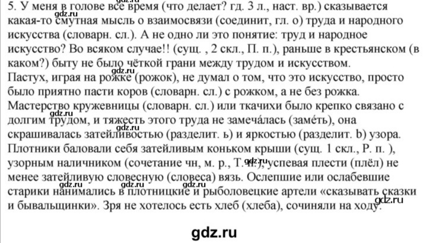Математика
Выучить правила номера 7,8,12,14,16,18,20,22Ответы

 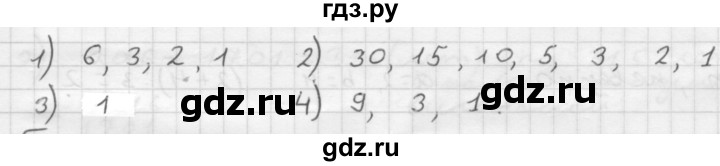
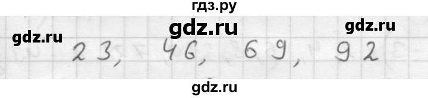
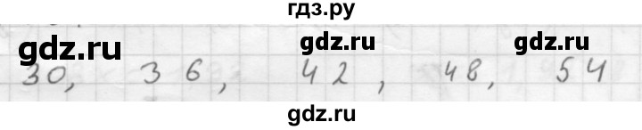
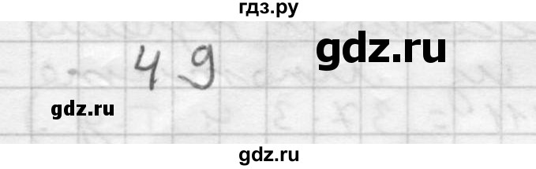
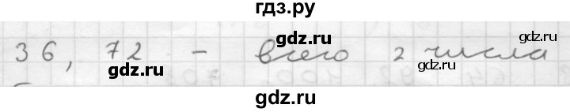
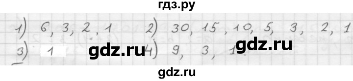
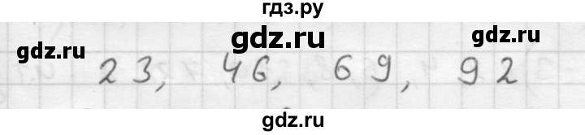
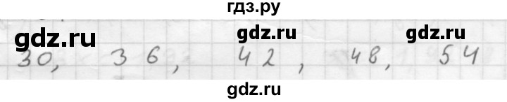
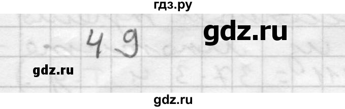
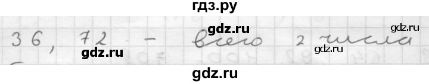
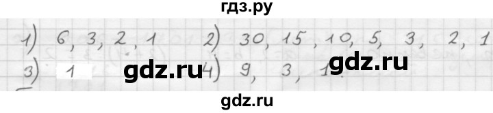
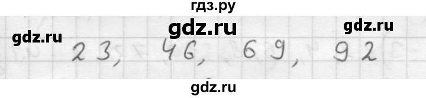
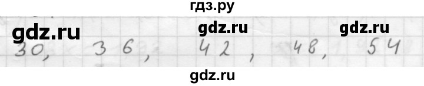
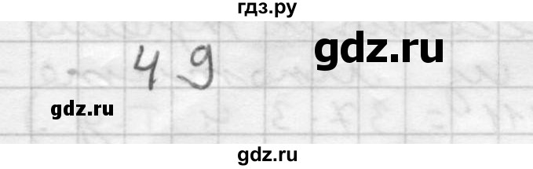
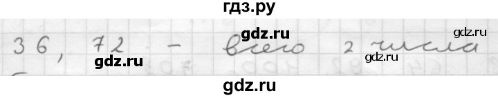
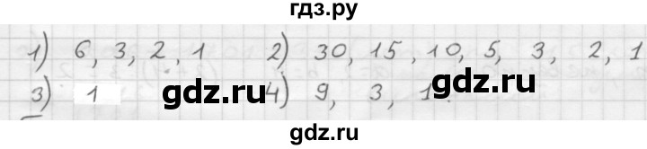
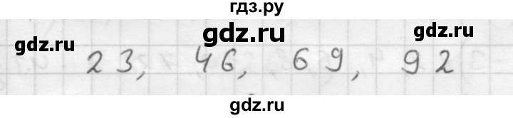
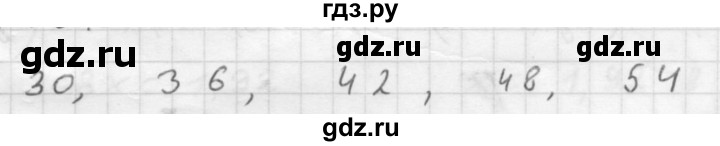
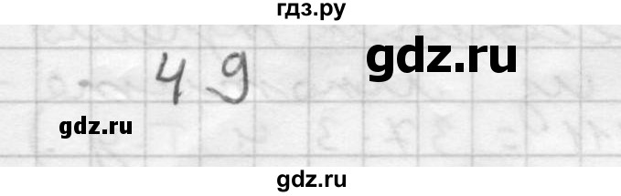
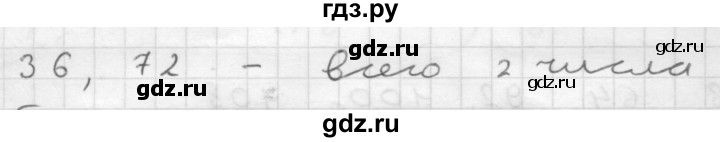